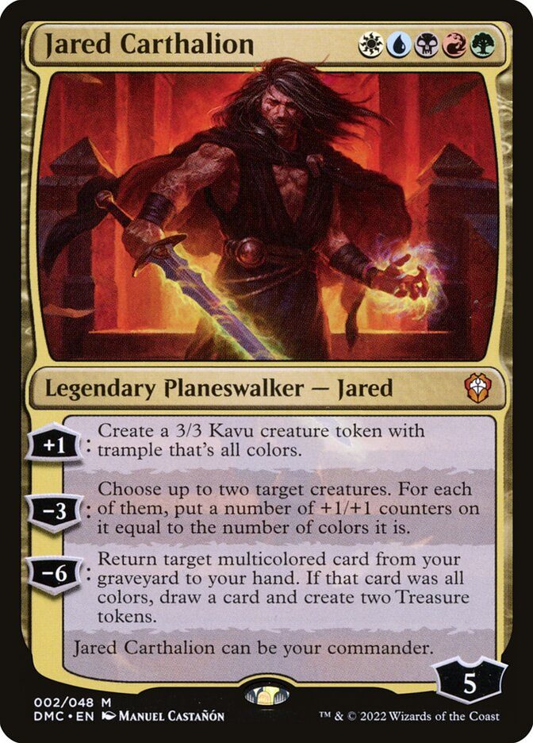

Introduction to Magic: The Gathering and Deck Building
Magic: The Gathering (MTG) is one of the most popular and enduring trading card games globally, combining strategy,
skill, and a touch of luck to create an engaging gameplay experience. Created by mathematician Richard Garfield and
first published in 1993 by Wizards of the Coast, MTG has expanded over the years into a massive ecosystem with millions
of players, hundreds of sets, and over 20,000 unique cards. The game pits players, known as “planeswalkers,” against
each other in strategic duels, where they summon creatures, cast spells, and use artifacts to defeat their opponents.
In MTG, each player builds a “deck” of cards, which serves as the source of their spells, creatures, and other abilities
during gameplay. The construction of a deck is one of the most exciting aspects of the game and also one of the most
challenging, as players need to create a balanced, functional, and competitive set of cards that aligns with a strategy
or “win condition.” There are many styles and formats of play, from the casual Standard format with rotating sets of
cards to the more eternal Commander format, which allows older and newer cards alike. My page is dedicated to exploring
a specific deck that I use, detailing how I play with it, why I chose particular cards, and where to find these cards if
you want to build something similar.
My Deck: Strategy and Play Style
The deck I’ll be presenting centers around a specific color or theme (e.g., Red Aggro, Blue Control, Green Ramp) that
offers unique abilities and a particular style of play. In MTG, colors represent different aspects of magic, such as
control and manipulation (Blue), destruction and aggression (Red), or growth and healing (Green). Each color has its
strengths and weaknesses, and combining colors can create even more intricate strategies. My deck’s primary goal is to
achieve a specific strategy by focusing on synergy between the cards I’ve selected. For example, a Red Aggro deck
prioritizes speed, overwhelming the opponent with a barrage of small creatures and direct damage spells to quickly
reduce their life total. In contrast, a Blue Control deck slows the game down by countering the opponent’s spells, using
powerful card-drawing effects, and carefully choosing when to attack.
I’ll walk through the key cards in my deck, explaining why I chose them and how they contribute to the deck’s overall
strategy. For instance, in a control deck, I might highlight key counterspells and creatures with defensive abilities.
In an aggro deck, I might showcase low-mana-cost creatures and cards with direct damage abilities. I’ll also discuss how
the deck handles different game stages, from the early turns to the crucial endgame, where the deck’s win condition
comes into play.
Finding and Acquiring Cards
Building a deck from scratch requires access to the right cards, and this can sometimes be challenging, especially for
newer players. Magic: The Gathering cards can be found in several ways, from purchasing booster packs to trading with
other players or even using online marketplaces. For anyone interested in building a deck similar to mine, I’ll discuss
the best methods to acquire each card or find similar alternatives if certain cards are rare or out of budget.


Currently Empty